Pilote automatique¶
Présentation du système¶
Le pilote automatique est la partie qui permet de barrer le bateau de manière autonome sans intervention humaine. Cela permet à l’utilisateur de tenir un cap ou un angle au vent de manière fiable tout en se reposant ou en faisant autre chose puisque le système agit sur la barre du bateau.
Pour mieux comprendre le fonctionnement du pilote automatique, voici ci-dessous un schéma des composants principaux de celui-ci :
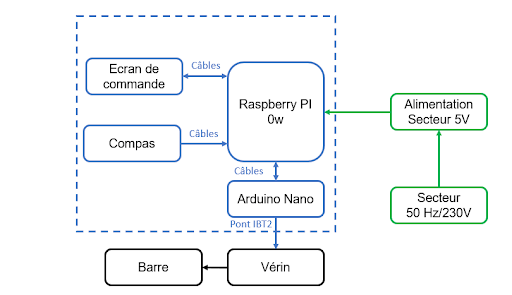
Figure 1. schéma des composants
Le pilote automatique est composé de 3 cartes :
- Le compas (qui donne le cap du bateau)
- La carte de contrôle (qui permet de visualiser les paramètres du pilote automatique)
- La carte principale (qui agit sur le vérin et qui permet de barrer le bateau)
Voici ci-dessous une photo de l’ensemble de ces trois cartes qui forment le pilote automatique.
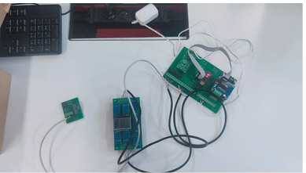
Figure 2. les trois cartes montées
Voici un zoom sur les trois cartes séparément ainsi que leurs composants :
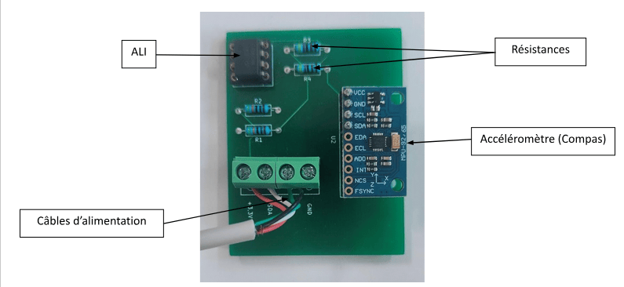
Figure 3. Photo du montage du compas
Détail des composants :
- ALI : Amplificateur Linéaire Intégré
- Résistances : réduire la tension avant l’ALI pour éviter la saturation ou pire, la rupture des composants
- Câbles d’alimentation : alimenter les composants présents sur la carte
- Accéléromètre : mesurer les flux magnétiques que l’on converti par la suite en cap
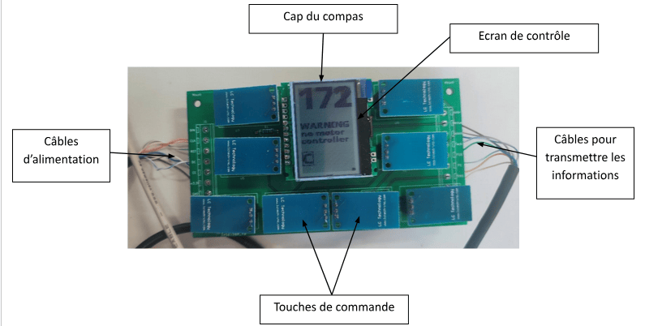
Figure 4. Photo du montage de la carte de contrôle
Détail des composants :
- Ecran de contrôle : afficher les informations nécessaires pour configurer et contrôler le pilote automatique.
- Câbles d’alimentation : alimenter la carte
- Câbles pour transmettre les informations : transmettre l’appui sur une touche à la carte principale pour que l’Arduino puisse contrôler le pilote automatique
- Touches de commande : commander le pilote avec des touches intuitives et pratiques d’utilisation (les touches sont tactiles)
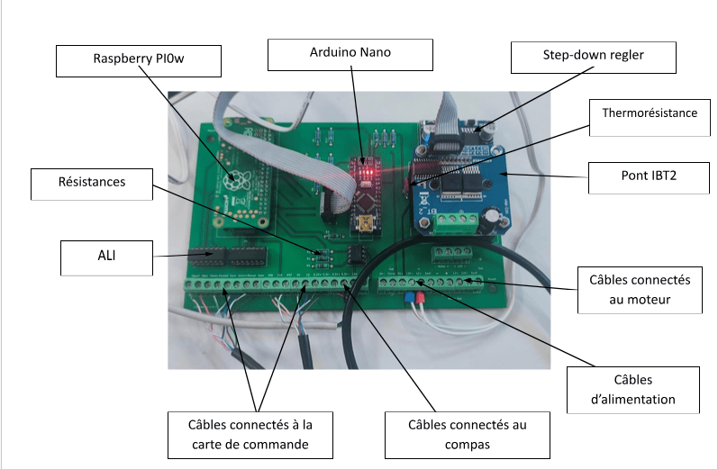
Figure 5. Photo du montage de la carte principale
Détail des composants :
- ALI : Amplificateur Linéaire Intégré
- Résistances : réduire la tension pour protéger des composants comme les ALI
- Câbles connectés à la carte de commande : faire circuler l’alimentation et les informations de la carte
- Câbles connectés au compas : idem que précédemment mais pour le compas
- Câbles d’alimentation : alimenter la carte principale
- Câbles connectés au moteur : alimenter le moteur et transmettre les informations pour piloter le moteur
- Pont IBT2 : commander le moteur
- Arduino Nano : piloter le Pont IBT2
- Step-down regler : réguler la tension pour alimenter la carte
-
Raspberry PI0w : permettre la communication avec OpenCPN en Wi-Fi
-
Thermorésistance : communiquer la température du pont pour lancer une alerte en cas de surchauffe
Montage¶
Partie Hardware¶
Pour débuter le montage du pilote automatique, il faut commencer par la partie hardware. Pour cela, il vous faudra les différents éléments de montage (présents dans la partie : Liste du matériel nécessaire, partie pilote automatique).
Il vous faudra également les outils suivants :
- fer à souder (pour les composants électroniques)
- tournevis plat de petite taille (pour les composants électroniques)
- tournevis cruciforme (pour les composants électroniques)
- pince coupante (pour dénuder du câble si besoin)
Il n’y a pas vraiment d’ordre de montage des trois cartes, vous pouvez le faire dans l’ordre que vous préférez. Ici, nous avons classé les cartes de la plus rapide à la plus longue à réaliser. Pensez seulement à mettre correctement tous les composants et les câbles et de bien vérifier les soudures avant de mettre sous tension sous peine d’endommager certains composants.
Recommandations pour les soudures :
- Nous vous conseillons d’apprendre à souder avant d’essayer de le faire pour le pilote automatique et de vous entraîner
-
De plus, pour les composants principaux comme la carte arduino, le raspberry, l’accéléromètre… nous utilisons :
-
Des connecteurs à pics :
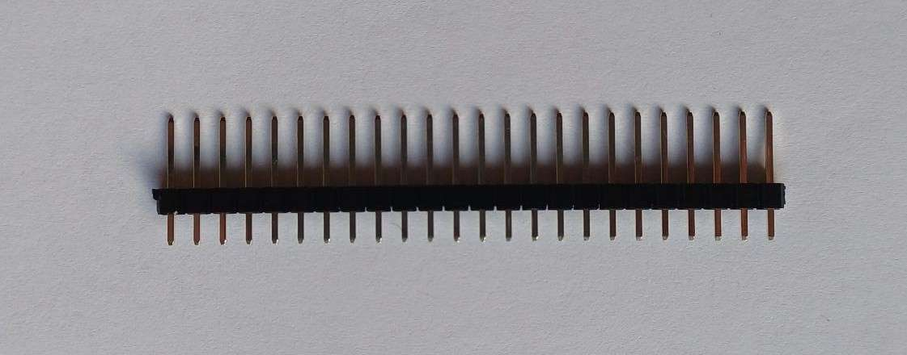
Figure 6. connecteurs à pics
- Des connecteurs à trous :
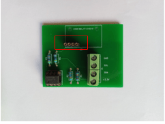
Figure 7. connecteurs à trous
- Connecteurs de bornier :
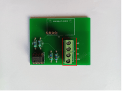
Figure 8. connecteurs de bornier
Cela permet de ne pas souder directement les composants sur la carte et donc de pouvoir les remplacer plus facilement en cas de dysfonctionnement.
Compas¶
Pour rappel, le compas est l’outil qui permet de connaître le cap du bateau et de communiquer cette information avec la carte principale pour que le pilote automatique corrige le cap.
Voici l’objectif final du montage :
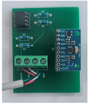
Figure 9. compas
Il vous faut souder les composants suivants :
| Emplacement sur la carte | Composant | Caractéristiques |
|---|---|---|
| J1 | 4 connecteurs de bornier | Aucunes |
| R1, R2 | Résistance | 430 𝛀 |
| R3, R4 | Résistance | 4,7 k𝛀 |
| U1 | 2x4 connecteurs à trous I2C extender (passerelle I2C en français) Attention aux pattes, elles sont très fragiles | Aucunes P82B715 + Sockel |
| U2 | 1x4 connecteurs à pics Accéléromètre | Aucunes MPU 9250 oder 9255 ou IMU 9250 oder 9255 ICM20948 (actuellement) |
Remarques :
- Pour trouver les bonnes valeurs de résistance et le système utilisé voici une image explicative :
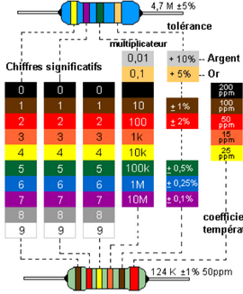
Figure 10. schéma_explicatif:positron libre
- Les résistances n’ont pas de sens, vous pouvez mettre la patte gauche à droite ou bien à gauche, cela ne changera en rien le fonctionnement de la résistance.
- Le I2C extender par contre a un sens et il faut être vigilant. Il faut vérifier la documentation en fonctions des composants mais voici notre montage comme indication :
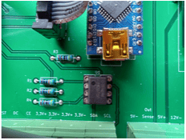
Figure 11. sens du I2C
On remarque que le point noir donne le sens, il est ici du côté de l’arrondi présent en dessous de U1
- Pour les quatre fils, il n’y a pas d’ordre non plus. Il faut juste que le fil branché au GND sur cette carte soit également branché au GND sur la carte principale (le montage sera détaillé dans la partie 6.2.1.3) et de même pour les 3 autres fils. De manière générale dans les montages électriques et électroniques, les couleurs n’ont pas vraiment d’importance sauf pour le noir qui concerne les fils reliés à la masse et donc GND (ground) en anglais mais vous êtes bien entendus libres de mettre les couleurs que vous préférez.
Carte de contrôle¶
Pour rappel, la carte de contrôle permet de contrôler le pilote automatique sans l’IHM, de manière indépendante. L’écran sert à afficher les différents menus et le cap du compas (172 dans la figure ci-dessous). Les boutons permettent de naviguer dans les menus et de modifier les paramètres pour paramétrer le pilote automatique.
Voici l’objectif final du montage :

Figure 12. face recto de la carte de contrôle
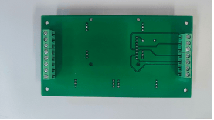
Figure 13. face verso de la carte de contrôle
Pour cela, il vous faudra souder les composants suivants :
| Emplacement sur la carte | Composant | Caractéristiques |
|---|---|---|
| J1 | 1x7 connecteurs de bornier sur le verso | Aucunes |
| J2 | 1x8 connecteurs de bornier sur le verso | Aucunes |
| R1 | Résistance | 2,5 k𝛀 |
| U3 | 1x8 Connecteurs à broches Ecran LCD | Aucunes Jlx12864 |
| U1-U2,U4-U8 | 8x1x3 connecteurs à trous Touches tactiles | Aucunes TP223 |
Mêmes remarques que précédemment concernant les couleurs des fils et leur emplacement.
De plus, comme les touches sont tactiles, nous vous conseillons de mettre des supports pour supporter les touches et éviter qu’elles ne s'abîment au fur et à mesure qu’on les manipule.
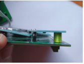
Figure 14. supports
Vous pouvez imprimer en 3D des cylindres (⌀ : 6 mm, hauteur : 9 mm), avant de le coller ou bien mettre des pions en bois. Le tout est de mettre un matériau isolant pour supporter les touches en porte à faux et éviter de les abîmer.
Carte principale¶
La carte principale est celle qui centralise les informations et qui permet de contrôler la barre. De plus, le raspberry assure la communication avec l’IHM et permet donc l’échange d’informations entre celui-ci et le pilote automatique.
Voici le montage final :
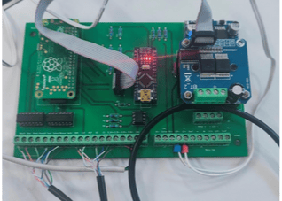
Figure 15. carte principale
Et voici une image pour voir les soudures en détails :
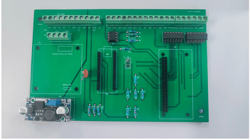
Figure 16. soudures carte principale
Pour cela il vous faudra souder les composants suivants :
| Emplacement sur la carte | Composant | Caractéristiques |
|---|---|---|
| J1, J2, J3, J5, J7, J8 | Connecteurs de bornier | Aucunes |
| J6 | 2x4 connecteurs à pics | Aucunes |
| R1, R2 | Résistances | 430 𝛀 |
| R3, R4, R12 | Résistances | 4,7 k𝛀 |
| R5 | Résistance | 10 k𝛀 |
| R6 | Résistance | 5,6 k𝛀 |
| R7, R8 | Résistances | 120 k𝛀 |
| R9, R10 | Résistances | 47 k𝛀 |
| R11, R13 | Résistances | 22 k𝛀 |
| TH1 | Thermorésistance | 4,7 k𝛀 |
| U1 | 2x4 connecteurs à trous I2C Extender Attention aux pattes, elles sont très fragiles | Aucunes P82B715 + Sockel |
| U2, U3 | 2x2x7 connecteurs à trous Inverter Attention aux pattes, elles sont très fragiles | Aucunes Inverter 74HCT04 + Sockel |
| U4 | 2x20 connecteurs à trous Raspberry Pi Zero W | Aucunes |
| U5 | Vis écrou de support Pont IBT2 4 câbles entre le pont et la carte (en rouge sur la figure …) | Aucunes |
| U6 | 4x1 connecteurs à pics Step-Down Regler | Aucunes LM2596 4-35V |
| A1 | 2x15 connecteurs à trous Arduino Nano | Aucunes |
Remarques :
- Pour la thermorésistance, une fois les soudures terminées et validées, vous pouvez installer le pont IBT2 et la thermistance avec de la pâte thermique entre les deux. Vous pouvez bien évidemment le faire quand vous le souhaitez mais il est plus simple de le faire une fois que vous n’aurez plus à manipuler la carte
- Pour le Step-Down Regler, il vaut mieux le calibrer sur 5V avant utilisation
- Même remarque pour le I2C extender que pour le compas concernant le sens de pose
- Les Inverter ont un sens et il faut être vigilant. Il faut vérifier la documentation en fonctions des composants mais voici notre montage comme indication :
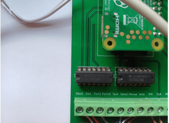
Figure 17. sens des inverter
- Pour les différents câbles, vous devez brancher les mêmes câbles que ceux des cartes précédentes. Par exemple, le câble GND du compas doit être branché sur l’emplacement GND réservé au compas sur la carte. Voici une figure illustrant les différentes parties réservées pour les cartes :
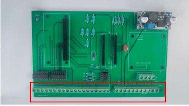
Figure 18. emplacement réservées de la carte
De gauche à droite :
| Emplacement sur la carte | Port | Caractéristiques |
|---|---|---|
| J2 | Stb10 | -10° sur le cap demandé |
| J2 | Stb1 | -1° sur le cap demandé |
| J2 | Port1 | +1° sur le cap demandé |
| J2 | Port10 | +10° sur le cap demandé |
| J2 | Tack | Touche Tack |
| J2 | Select | Touche Select |
| J2 | Menue | Touche Menu |
| J2 | Auto | Touche Auto |
| J1 | DIN | DIN pour l’écran |
| J1 | CLK | Clock pour l’écran |
| J1 | RST | Reset pour pour l’écran |
| J1 | DC | DC pour l’écran |
| J1 | CE | CE pour l’écran |
| J1 | 3.3V+ | +3.3V pour l’écran |
| J1 | 3.3V- | -3.3V pour l’écran |
| J3 | 3.3V+ | +3.3V pour le compas |
| J3 | 3.3V- | -3.3V pour le compas |
| J3 | SDA | SDA pour le compas |
| J3 | SCL | SCL pour le compas |
| J7 | 5V- | -5V pour potentiomètre |
| J7 | Sense | retour du potentiomètre |
| J7 | 5V+ | +5V pour potentiomètre |
| J5 | 12V- | +12V alimentation |
| J5 | 12V+ | -12V alimentation |
| J5 | SeaT | Connexion non utilisée par pypilot |
| J5 | - | alimentation du moteur |
| J5 | + | alimentation du moteur |
| J5 | 12V+ | alimentation du vérin |
| J5 | 12V- | alimentation du vérin |
| J5 | SeaT | Connexion non utilisée par pypilot |
| J8 | Motor - | alimentation du moteur |
| J8 | Motor + | alimentation du moteur |
| J8 | 12V- | alimentation du vérin |
| J8 | 12V+ | alimentation du vérin |
Remarques:
- Sur J5, les connexions : in 12V, In12+ et In Seat sont connectées directement sur le PCB respectivement à Out 12V-, Out12+ et Out Seat.
Partie Software¶
Pour ce qui est de la partie software, tous les codes proviennent de Github et peuvent y être téléchargés.
Liens à ajouter
Le matériel nécessaire pour effectuer tout cela, est le suivant :
- un câble USB type A - Micro USB pour alimenter le Raspberry Pi Zero et faire quelques tests
- un câble USB type A - Mini USB type B pour alimenter la carte Arduino Nano et téléverser les codes dessus
- un lecteur de carte SD
- une carte SD d’au moins 2 GB
Raspberry Pi Zero¶
Dans ce passage nous détaillons le processus de connexion du pilote automatique à l’IHM.
Cela permettra de centraliser les informations et de pouvoir contrôler le pilote automatique sur l’écran principal.
Vous devez déjà avoir téléchargé pypilot sur l’IHM (partie 4.4).
Le Raspberry Pi a le rôle d’ordinateur pour le pilote automatique, c’est lui qui transfère les informations au programme OpenCPN et qui gère les différentes informations reçues dans le pilote automatique en général (affichage sur l’écran LCD, données du compas, …). Il faut donc “flasher” le programme de base de cet ordinateur, qui est sous la forme d’une image sur la carte SD du Raspberry Pi.
Pour cela :
- Téléchargez la dernière version de Tinypilot sur leur site : https://pypilot.org/downloads/
- Décompressez l’archive qui a été téléchargée, ça sera l’image à transférer
- Pour flasher l’image sur la carte SD, installez le logiciel raspberry Pi imager : https://www.raspberrypi.com/software/
- Une fois le logiciel installé et les instructions de mise en route suivies, vous pouvez flasher l’image
- Sélectionnez le modèle de raspberry (ici le Raspberry Pi 0 W)
- Sélectionnez ensuite l’utilisation d’une image personnalisée comme OS, et allez chercher celle que vous venez de télécharger
- Vous pouvez maintenant choisir le stockage que vous souhaitez utiliser, et lancer l’écriture
Une fois que vous avez flashé l’image, insérez la carte SD dans le Raspberry PI Zero, puis
Attendez ensuite une minute le temps que le Raspberry se lance correctement. Maintenant connectez-vous au réseau wifi “pypilot” qui devrait apparaître dans les réseaux disponibles, il n’y a pas besoin de mot de passe.
Ensuite dans votre navigateur, entrez l’adresse IP suivante dans la barre d’adresse : 192.168.14.1
Cela devrait vous amener sur cette page du pilote automatique (remarque la langue et la couleur du fond peuvent être modifiée et donc différentes sur votre pilote automatique) :
![][image18]
Figure 58 : page d’accueil pilote automatique
Cette page web est essentielle car elle permet d'accéder à tous les paramètres du pilote automatique depuis un écran plus grand que l’écran LCD.
En effet, si vous utilisez le pilote automatique de manière autonome, vous pouvez accéder à toutes les données et les paramètres sur cette page web (ce sont les mêmes menus que ceux afficher sur l’écran LCD).
Ainsi pour les calibrations futures, vous pourrez passer par l’écran ou par ce site directement selon vos préférences.
Allez dans l’onglet “Configuration”, puis cliquez sur le lien “Configure Wifi”, vous devez obtenir la page suivante :
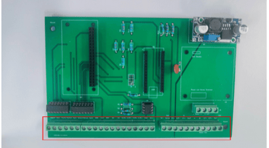
Figure 19. page de configuration Wifi
On observe ici le point d’accès qui a été créé ainsi que notre PC qui est connecté au réseau (c’est l’adresse IP 192.168.14.109)
Il faut ensuite changer l’onglet de Master (AP) à Manage (client) cela signifie que le raspberry passe de manager du réseau à client et nous allons le configurer pour être Client du réseau créé par l’IHM comme sur la figure suivante :
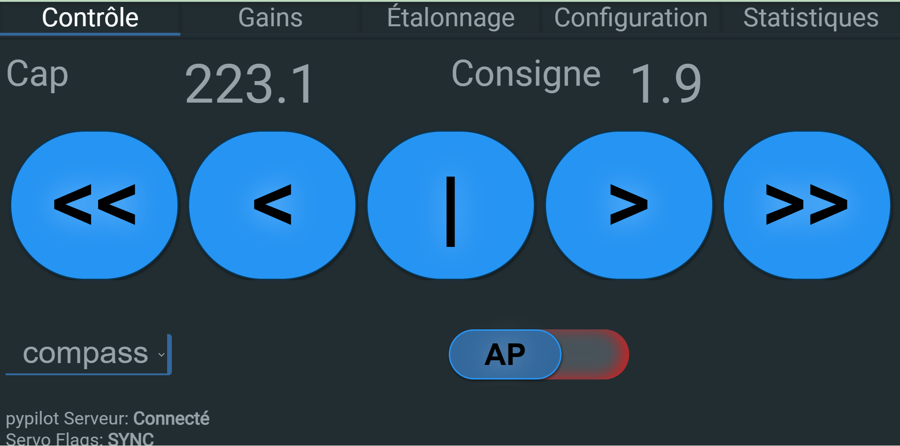
Figure 20. configuration client
Complétez les champs suivants :
- SSID par celui configuré dans l’IHM (attention aux majuscules, il faut bien mettre exactement le même nom)
- Client Clé par le code renseigné dans l’IHM (partie 4.2.5)
- adresse du mode client avec une adresse IP compatible avec celles configurées dans l’IHM (partie 4.2.5) et notez l’adresse IP, on en aura besoin plus tard
Puis cliquez sur Submit, débranchez la carte du PC avant de la rebrancher sur la carte principale pour “reboot” la carte et valider l’opération.
Dans OpenCPN (sur l’IHM) lancez le plugin pypilot et cliquez sur AP comme sur la figure suivante :
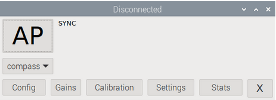
Figure 21. connexion pypilot
Ensuite, entrez dans l’onglet Settings et noter l’adresse IP (celle configurée quelques lignes plus tôt) dans la barre comme sur la figure suivante :
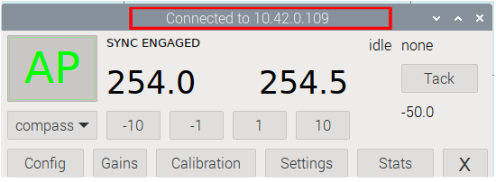
Figure 22. connexion réussie
Vous devriez avoir le bandeau vert après quelques secondes signifiant une réussite de l’opération. Si ce n’est pas le cas, il se peut que vous ayez fait une des erreurs suivantes :
- Problème de carte SD du raspberry PI
- Mauvaise adresse IP
- Mauvaise configuration de pypilot
- Mauvaise configuration du point d’accès de l’IHM (partie 4.2.5)
Reprenez les étapes précédentes ou renseignez vous sur le forum en cas de problème.
Une fois validé, vous pouvez observer le message : Connecté à OpenCPN sur l’écran LCD du pilote automatique dans le menu : settings -> control -> Wifi et les informations préalablement renseignées.
Ceci clos la connexion entre le pilote automatique et l’IHM, maintenant toutes les informations trouvables sur le site web ou sur l’écran LCD se retrouve sur l’IHM (notamment le cap du compas et le cap désiré).
Arduino Nano¶
La carte arduino Nano a pour rôle d’envoyer les commandes au moteur en fonction des données reçues par le compas. Pour cela, il faut lui donner le programme qu’elle devra suivre.
Afin de téléverser ce programme, vous pouvez télécharger l’IDE Arduino depuis leur page web, et suivre les étapes d’initialisation :
https://www.arduino.cc/en/software/
Une fois que le logiciel est installé, vous pouvez télécharger le programme à téléverser sur github, ainsi que les bibliothèques nécessaires :
Lien temporaire pour les fichiers :
https://drive.google.com/file/d/1sLZdqL6ufFpdVWxDVSjmh9KC6vfXsYSw/view?usp=drive_link
Une fois que vous avez téléchargé cette archive zip, vous pouvez la décompresser et mettre tous les fichiers dans le même dossier de votre ordinateur, puis renommer ce dossier “pypilotmotorcontrollerwithrudder”
Vous pouvez maintenant ouvrir le fichier en .ino qui se trouve dans ce dossier avec le logiciel Arduino IDE
Vérifier s’il faut ouvrir un workspace ou bien si le fichier .ino suffit
Vous pouvez maintenant connecter la carte arduino à votre ordinateur, choisir le modèle “Arduino Nano” dans Tools->Board->Arduino Nano, puis choisir le bon port dans Tools->Port
(Pour connaître le bon port, il suffit de tester l’étape suivante et si elle renvoie une erreur, essayez avec un autre choix)
Vous pouvez maintenant téléverser le programme en cliquant sur le bouton avec la flèche vers la droite.